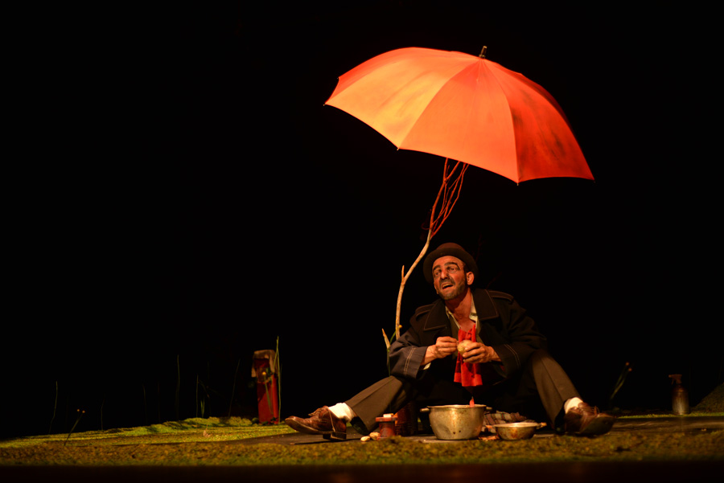

“Primer amor” este
finde en Casa de Teatro
Esta obra te deja con un sabor a humanidad
Por Freddy Ginebra | Santo Domingo, República Dominicana

El colectivo teatral colombiano “Matacandelas” está de visita en el país por motivo del 44 aniversario de Casa de Teatro, donde presentarán este fin de semana su obra “Primer amor” de Samuel Beckett, con la actuación de Juan David Toro y la dirección de Diego Sánchez.
La primera vez que vi a Juan David actuando supe que estaba frente a un extraordinario hombre de teatro. Juan David es cada vez el personaje que representa, se entrega de tal manera que pierde por completo su personalidad para convertirse en su papel de turno. En lo cotidiano es un hombre sencillo, casi invisible, de pocas palabras, pero una vez sube al escenario una estela de luz lo acompaña. Cuando me enteré de que iba a representar “Primer amor”, obra de Samuel Beckett, supe que vería al maestro lucirse en escena. Juan David viene precedido de grandes elogios, de aplausos interminables y bajo la dirección de su compañero del colectivo teatral Matacandelas de Colombia, Diego Sánchez, han armado una pieza memorable que brillará para siempre en el teatro colombiano. Y este fin de semana tendremos el privilegio de disfrutarla en Casa de Teatro, de viernes a domingo.
—¿Por qué seleccionaron a este autor?
Samuel Beckett es uno de los grandes dramaturgos. Ha creado un mundo propio bastante parecido al nuestro, consiguiendo descifrar elementos relevantes y contundentes de la condición humana, donde el mundo que hemos hecho, por cierto, queda muy mal parado.
—¿Quién es el director y cuánto tiempo lleva en Matacandelas?
Diego Sánchez es integrante del Teatro Matacandelas desde 1985, desempeñándose como actor, músico, titiritero, luminotécnico y director. Esta obra te deja con un sabor a humanidad.
—¿Qué esperan del público dominicano?
Que se apodere de nuestra obra, de nuestro arte; que lo haga suyo. Para eso montamos este espectáculo, para eso hacemos teatro.
—¿Qué significa actuar para Juan David?
Actuar es, por un instante, lograr poseerse sin las exigencias del llamado mundo real. Solo en ese destello de tiempo casi el único compromiso es con el universo. Matacandelas es una forma de afrontar la vida, una trinchera filosófica que nos permite llevar con calma la existencia.
—¿De qué trata “Primer amor”?
Sencillo, es el relato de un primer amor, pero a la magistral manera de Samuel Beckett, eso lo hace único.
—Sabemos del éxito de esta obra, Juan David, ¿a qué te saben los aplausos?
Los aplausos saben a no creer en ellos, pequeños o fuertes pueden hacerte sentir conforme y allí es donde se debe continuar esa lucha contra el ego artístico.
—¿Cómo evalúas el estado actual del teatro colombiano?
El teatro colombiano está bastante fortificado con propuestas de todo tipo, buscando llegar a todos los públicos, divirtiendo, cuestionando, poetizando, haciendo preguntas. Creo que vamos bien.
—Juan David, tu pasión por el teatro surge cuando...
Yo diría mi necesidad por el teatro; la pasión suele ser pasajera, la necesidad es una constante, siempre necesitamos algo. Y esa necesidad teatral surgió cuando, de niño, me encerraba en mi cuarto a jugar a ser un gran bailarín, y a la vez hacía de público que aplaudía. Ese fue el germen de mi necesidad de representar, un impulso espiritual.
Publicado en: www.diariolibre.com